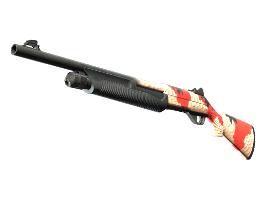

Recent drops
The best drops of a case by value: a strip of cards that scrolls sideways and snaps, each card the link to its round, under a head that names the order. Everything on this page is drawn by design/system/components/recent-drops.css through index.css.
Anatomy
Best drops
By value. What usually drops
- 47.30 coins
 AK-47Redline
AK-47Redline won by nightjar_cs18 Aug, 14:44
won by nightjar_cs18 Aug, 14:44 - 14.20 coins
 USP-SKill Confirmed
USP-SKill Confirmed won by tallowcs18 Aug, 14:22
won by tallowcs18 Aug, 14:22 - 12.90 coins
 Glock-18Water Elemental
Glock-18Water Elemental won by brisk.aim18 Aug, 14:58
won by brisk.aim18 Aug, 14:58 - 10.90 coins

NovaKoi won by kovalskii18 Aug, 14:39
won by kovalskii18 Aug, 14:39 - 10.30 coins
 MP9Rose Iron
MP9Rose Iron won by mira_fps18 Aug, 14:51
won by mira_fps18 Aug, 14:51 - 9.60 coins
 P250Asiimov
P250Asiimov won by deadeye_ua18 Aug, 14:31
won by deadeye_ua18 Aug, 14:31
The strip holds molecules and never redraws them: the Section head (level 2, .sec-head--upgrade, its onward Text link at .link--l) and the Recent drop card (level 2, one in each cell, its value at .fig--title and its winner at .avatar--l). The strip's own part is the scroller, the cells, the room it gives back to the cards' lift and light, and its ring.
| Part | Class or element | What to change there |
|---|---|---|
| The block | .recent-drops (a <section> labelled by its head) | its own --recent-drops-col and --recent-drops-col-s |
| Head | .sec-head.sec-head--upgrade (Section head) | Best drops, By value, and the way to what usually drops |
| Strip | .recent-drops__strip (an <ol> labelled with the case's name) | one column per card, at least 150px, 12px apart; scrolls sideways and snaps to a card's start; no scrollbar drawn; its negative margin gives back the room the cards' lift and light need |
| Cell | .recent-drops__cell | one card; a grid, so the card fills it |
| Card | .recent-drop (Recent drop card) | everything inside a cell is the card's |
Variants and sizes
One form; the window's width sets the column.
- From 600px of window: columns of at least 150px that share the width, 12px apart. A card here: .
- Under 600px: each card 140px, 10px apart, the next one cut by the edge so the strip says it scrolls. Narrow the window to see it.
The same strip in a 480px frame: the columns keep their 150px and the strip scrolls.
Best drops
By value. What usually drops
- 47.30 coinsAK-47Redlinewon by nightjar_cs18 Aug, 14:44
- 14.20 coinsUSP-SKill Confirmedwon by tallowcs18 Aug, 14:22
- 12.90 coinsGlock-18Water Elementalwon by brisk.aim18 Aug, 14:58
- 10.90 coinsNovaKoiwon by kovalskii18 Aug, 14:39
- 10.30 coinsMP9Rose Ironwon by mira_fps18 Aug, 14:51
- 9.60 coinsP250Asiimovwon by deadeye_ua18 Aug, 14:31
When to use
On the case screen, after what the case pays: the best drops this case gave, by value, each the way to its round's public result. It answers "what does this case actually give" with real rounds, beside the published odds. Its words are the screens': Best drops, By value, What usually drops.
Rule and anti-rule
Use it
The case screen: Best drops of Ironbound, by value, under the head with the way to what usually drops; the same block in the Deposit and Sign in dialogs over the case.
Take another component
Drops across every case as they happen run in the Ticker. What a case can drop, with every chance, is the Drop card's table. A person's own items are the Item grid.
States
No states: it is not interactive. Each card is a link and keeps the Recent drop card's lift, ring and press. The strip carries kit.css's ring on :focus-visible (--line-focus), for a browser that hands a scroller the focus; its cards take Tab first, so on the screens the ring a person sees is the card's. No script sets a state on the strip.
In the code
| Token | Kind | Dark | Light |
|---|
Read live from tokens.css. The base ink and the ring; no component token, no colour primitive. Geometry from the primitives and the strip's own --recent-drops-col and --recent-drops-col-s.
File: design/system/components/recent-drops.css, loaded by design/system/index.css in the organisms' group.
<section class="recent-drops" aria-labelledby="h2-recent">
<div class="sec-head sec-head--upgrade"><h2 class="sec-head__title" id="h2-recent">...Best drops</h2>
<p class="sec-head__sub">By value. <a class="link link--arrow link--l" href="#h2-observed">What usually drops</a></p></div>
<ol class="recent-drops__strip" aria-label="Best drops of Ironbound, by value">
<li class="recent-drops__cell"><a class="recent-drop recent-drop--r2" href="...">...</a></li>...
</ol>
</section>
Stands on: the case screen, Deposit, Sign in (the case's block under their dialogs). Until step 8 those screens still read kit.css.